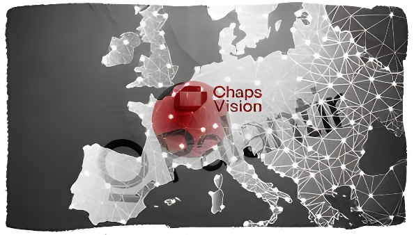

En mai 2026, le Bundesamt für Verfassungsschutz (BfV), le service de contre-espionnage intérieur allemand, a attribué à la société française ChapsVision un contrat stratégique pour l'analyse de ses données de renseignement — écartant délibérément l'américain Palantir Technologies. Une décision qui dépasse largement le simple choix logiciel : elle cristallise les tensions transatlantiques autour de la dépendance technologique européenne et envoie un signal politique retentissant à l'ensemble du continent.
Le Bundesamt für Verfassungsschutz, dont la mission est de protéger l'ordre constitutionnel allemand face à l'espionnage, au terrorisme et à l'extrémisme, a officiellement retenu la plateforme ArgonOS, développée par ChapsVision. L'information, révélée par les médias allemands WDR, NDR et le Süddeutsche Zeitung, a immédiatement suscité une attention bien au-delà du périmètre habituel des marchés publics informatiques. ArgonOS mobilise l'intelligence artificielle pour agréger et croiser des données issues de sources très hétérogènes : bases internes classifiées, renseignement en sources ouvertes (OSINT) et contenus issus du Darknet. La plateforme produit ensuite des cartographies exploitables directement par les analystes.
Ce qui distingue ce contrat, c'est moins la valeur financière du marché que son contexte : Palantir courtisait activement le BfV depuis plusieurs années, investissant massivement dans ses relations institutionnelles en Allemagne. L'éviction de l'américain n'est donc pas un accident administratif. C'est un choix délibéré, assumé publiquement, et préparé de longue date.
Le dossier Palantir empoisonne le débat politique allemand depuis plusieurs années. La société américaine — fondée notamment avec des fonds de la CIA via son fonds In-Q-Tel — a toujours suscité une méfiance particulière en Allemagne, pays où la mémoire des écoutes de la NSA sur le téléphone d'Angela Merkel, révélées par les documents Snowden en 2013, reste particulièrement vive au sein de l'appareil sécuritaire.
En décembre 2025, le président du BfV, Sinan Selen, avait publiquement annoncé lors d'une conférence interne la volonté de son service d'« affûter son prisme européen » dans ses choix technologiques. En avril 2026, le vice-amiral Thomas Daum, responsable de la cyberdéfense de la Bundeswehr, avait été encore plus direct, jugeant « inconcevable » d'accorder à des employés d'une entreprise privée américaine un accès aux bases de données nationales. Le PDG de Palantir, Alex Karp, avait répliqué publiquement en qualifiant cette défiance d'« infondée » — une sortie qui n'avait fait qu'aggraver les tensions.
Les révélations Snowden exposent les écoutes de la NSA sur le téléphone d'Angela Merkel. La méfiance envers les prestataires tech américains dans le renseignement allemand s'installe durablement.
Sinan Selen, président du BfV, annonce la recherche d'alternatives européennes à Palantir lors d'une conférence interne.
Le vice-amiral Thomas Daum juge « inconcevable » de donner à une entreprise américaine privée accès aux bases de données nationales de sécurité.
Attribution du contrat ArgonOS à ChapsVision, révélée par WDR, NDR et le Süddeutsche Zeitung. Palantir est officiellement écarté du marché BfV.
Fondée en 2019 par Olivier Dellenbach — entrepreneur qui avait auparavant cédé sa société E-Front à BlackRock pour 500 millions de dollars — ChapsVision s'est développée à un rythme soutenu, réalisant 29 acquisitions en moins de six ans pour devenir l'un des principaux éditeurs européens de logiciels d'analyse de données et de cyber-intelligence. ArgonOS est déjà déployé au sein de plusieurs agences françaises, dont la DGSI (Direction générale de la sécurité intérieure), ce qui constitue une référence opérationnelle solide aux yeux du BfV.
La plateforme sera déployée dans un environnement qualifié de « souverain fermé » : aucun accès externe, aucune connexion à des serveurs hors du territoire allemand. Cette architecture a été l'un des critères déterminants du choix, aux côtés de la capacité d'ArgonOS à traiter simultanément des données structurées et non structurées — textes, images, métadonnées, échanges cryptés — pour les rendre exploitables par des analystes humains.
| Critère | ChapsVision / ArgonOS | Palantir |
|---|---|---|
| Origine | France 🇫🇷 | États-Unis 🇺🇸 |
| Déploiement souverain | Environnement fermé, on-premise | Dépendances cloud US possibles |
| Référence en renseignement | DGSI (France) | CIA, FBI, NYPD, BKA (all.) |
| Exposition au Cloud Act | Non soumis | Entreprise américaine |
| Fondation | 2019 | 2003 |
Marc Henrichmann, président de la commission parlementaire de contrôle des services de renseignement allemands, a salué la décision comme « un signal clair en faveur de la souveraineté numérique européenne », tout en précisant que la performance opérationnelle d'ArgonOS devra faire ses preuves dans la durée. Le choix du BfV résonne d'autant plus fortement que la DGSI française a, elle, renouvelé en décembre 2025 son contrat avec Palantir pour trois ans supplémentaires — après avoir lancé un appel d'offres en 2022 pour trouver un remplaçant européen. L'ironie est piquante : c'est finalement l'Allemagne qui déploie le logiciel français, pendant que la France reste liée à l'américain.
Le choix du BfV n'est pas une anecdote de marché public : il constitue un tournant dans la politique européenne de souveraineté numérique. En optant pour ChapsVision, l'Allemagne démontre qu'une alternative crédible à Palantir existe sur le vieux continent — et qu'elle peut être retenue pour des missions parmi les plus sensibles qui soient. La vraie question n'est plus de savoir si l'Europe peut produire de tels outils, mais si ses États membres ont la volonté politique de les choisir. Sur ce terrain, Berlin vient de prendre une longueur d'avance décisive. Reste à voir si Paris et les autres capitales européennes sauront tirer les leçons de cet exemple — ou si elles continueront à invoquer la maturité insuffisante des alternatives pour justifier une dépendance technologique qui s'éternise.
Im Mai 2026 vergab das Bundesamt für Verfassungsschutz (BfV) einen strategischen Auftrag für die Analyse seiner Geheimdienstdaten an das französische Unternehmen ChapsVision — und schob damit den amerikanischen Konzern Palantir Technologies beiseite. Eine Entscheidung, die weit über eine einfache Softwarewahl hinausgeht und ein starkes politisches Signal für die technologische Unabhängigkeit Europas setzt.
Das Bundesamt für Verfassungsschutz hat offiziell die Plattform ArgonOS des Unternehmens ChapsVision ausgewählt. Die Information wurde von WDR, NDR und der Süddeutschen Zeitung enthüllt. ArgonOS setzt auf Künstliche Intelligenz, um Daten aus sehr unterschiedlichen Quellen zusammenzuführen und zu verknüpfen : interne Geheimdatenbanken, Open-Source-Geheimdienstdaten (OSINT) und Inhalte aus dem Darknet. Die Plattform erstellt daraus verwertbare Lagebilder für menschliche Analysten.
Was diesen Auftrag auszeichnet, ist weniger sein finanzielles Volumen als sein Kontext : Palantir hatte das BfV jahrelang aktiv umworben und massiv in seine institutionellen Beziehungen in Deutschland investiert. Der Ausschluss des amerikanischen Konzerns ist daher kein Verwaltungszufall, sondern eine bewusste, öffentlich vertretene und langfristig vorbereitete Entscheidung.
Die Palantir-Frage vergiftet die deutsche politische Debatte seit Jahren. Das amerikanische Unternehmen — mitgegründet mit CIA-Geldern über den Fonds In-Q-Tel — hat in Deutschland stets besonderes Misstrauen erregt. Die Erinnerung an die NSA-Abhöraktion gegen Angela Merkels Handy, enthüllt durch die Snowden-Dokumente im Jahr 2013, ist im deutschen Sicherheitsapparat noch lebendig.
Im Dezember 2025 hatte BfV-Präsident Sinan Selen öffentlich angekündigt, sein Dienst wolle künftig „europäische Alternativen" zu amerikanischen Technologieanbietern bevorzugen. Im April 2026 war Vizeadmiral Thomas Daum, Leiter der Cyberabwehr der Bundeswehr, noch direkter und bezeichnete es als « undenkbar », Mitarbeitern eines amerikanischen Privatunternehmens Zugang zu nationalen Datenbanken zu gewähren. PDG Alex Karp von Palantir reagierte öffentlich und nannte diese Skepsis « unbegründet » — eine Aussage, die die Spannungen nur weiter verschärfte.
Snowden-Enthüllungen zu NSA-Abhöraktionen gegen Merkels Handy. Das Misstrauen gegenüber US-Tech-Dienstleistern im deutschen Geheimdienst verfestigt sich dauerhaft.
BfV-Präsident Sinan Selen kündigt bei einer internen Konferenz die Suche nach europäischen Alternativen zu Palantir an.
Vizeadmiral Thomas Daum bezeichnet den Zugang eines US-Privatunternehmens zu nationalen Sicherheitsdatenbanken als « undenkbar ».
Vergabe des ArgonOS-Vertrags an ChapsVision, enthüllt von WDR, NDR und der Süddeutschen Zeitung. Palantir wird offiziell vom BfV-Markt ausgeschlossen.
Gegründet 2019 von Olivier Dellenbach — einem Unternehmer, der zuvor seine Gesellschaft E-Front für 500 Millionen Dollar an BlackRock verkauft hatte — hat ChapsVision in weniger als sechs Jahren 29 Akquisitionen durchgeführt und ist zu einem der führenden europäischen Anbieter von Datenanalyse- und Cyber-Intelligence-Software geworden. ArgonOS ist bereits bei mehreren französischen Behörden im Einsatz, darunter die DGSI (Generaldirektion für Innere Sicherheit), was dem BfV eine solide operative Referenz bietet.
Die Plattform wird in einer « souveränen geschlossenen » Umgebung eingesetzt : kein externer Zugriff, keine Verbindung zu Servern außerhalb Deutschlands. Diese Architektur war neben der Fähigkeit von ArgonOS, strukturierte und unstrukturierte Daten gleichzeitig zu verarbeiten, eines der ausschlaggebenden Auswahlkriterien.
| Kriterium | ChapsVision / ArgonOS | Palantir |
|---|---|---|
| Herkunft | Frankreich 🇫🇷 | USA 🇺🇸 |
| Souveräner Betrieb | Geschlossene On-Premise-Umgebung | Mögliche US-Cloud-Abhängigkeiten |
| Referenz im Geheimdienstbereich | DGSI (Frankreich) | CIA, FBI, NYPD, BKA |
| Cloud Act-Risiko | Nicht betroffen | US-amerikanisches Unternehmen |
| Gründungsjahr | 2019 | 2003 |
Marc Henrichmann, Vorsitzender des parlamentarischen Kontrollgremiums für die deutschen Nachrichtendienste, begrüßte die Entscheidung als « klares Signal für die digitale Souveränität Europas », betonte jedoch, dass die operative Leistungsfähigkeit von ArgonOS langfristig unter Beweis gestellt werden müsse. Die Wahl des BfV ist umso bedeutsamer, als die französische DGSI im Dezember 2025 ihren Vertrag mit Palantir um drei weitere Jahre verlängert hat — nachdem sie 2022 eine Ausschreibung für einen europäischen Ersatz lanciert hatte. Die Ironie ist treffend : Am Ende ist es Deutschland, das die französische Software einsetzt, während Frankreich weiterhin an den amerikanischen Anbieter gebunden bleibt.
Die BfV-Entscheidung ist keine Randnotiz im Bereich der öffentlichen Auftragsvergabe : Sie markiert einen Wendepunkt in der europäischen Politik der digitalen Souveränität. Indem Deutschland ChapsVision wählt, beweist es, dass es eine glaubwürdige Alternative zu Palantir auf dem alten Kontinent gibt — und dass diese für hochsensible Aufgaben ausgewählt werden kann. Die eigentliche Frage lautet nicht mehr, ob Europa solche Werkzeuge entwickeln kann, sondern ob seine Mitgliedstaaten den politischen Willen haben, sie auch einzusetzen. In diesem Punkt hat Berlin einen entscheidenden Vorsprung erzielt. Es bleibt abzuwarten, ob Paris und andere europäische Hauptstädte die Lehren aus diesem Beispiel ziehen — oder ob sie weiterhin auf die angeblich unzureichende Reife europäischer Alternativen verweisen werden, um eine Technologieabhängigkeit zu rechtfertigen, die sich immer länger hinzieht.